Construtor, mochila e a luz de scanner
- Ícone do construtor (
icon_constructor, 16×16): a ferramenta de mão que constrói as máquinas. Pistola com cabeça emissora e lente ciano, nada de ponta de broca. - Ícone da mochila (
icon_backpack, 16×16): equipamento do traje, +1 linha de slots. Mesma família do tanque de O₂ e do scanner. - Luz de scanner pra construir (1,5 s, de baixo pra cima) e desmontar (2 s, de cima pra baixo). É um efeito procedural que o Dev faz no código. Aqui estão as regras, os números e a simulação em 4 máquinas reais sobre o chão do jogo.
Ícones novos
Construtor
icon_constructor.png · 16×16pistola de construção de perfil: corpo branco com a faixa laranja, visorzinho em cima, cabo laranja com gatilho e, na frente, a cabeça emissora: anel cinza com a lente ciano grande (brilho branco em cima, ciano escuro embaixo). Lê como projetor de luz: sem ponta, sem cone, sem rosca, pra não brigar com a broca de mão que vem depois.
Mochila
icon_backpack.png · 16×16vista de costas, em domo: alça de mão, aba branca com o LED ciano e a borda laranja com a fivela, tira escura descendo, bolso da frente com o zíper laranja e as alças de ombro escuras nos dois lados. Mesmo branco frio, cinzas, laranja e ciano do tanque de O₂ e do scanner.
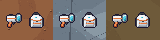
Na hotbar e no traje, em tamanho real
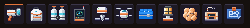
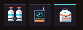
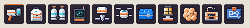
Luz de scanner · animada
Loop do report: constrói (1,5 s), flash, fica parada 1 s, desmonta (2 s), holograma pisca e some. Tudo a 12 passos por segundo, sobre o chão do jogo.
Luz de scanner · na base
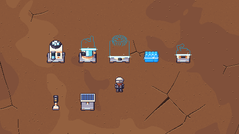
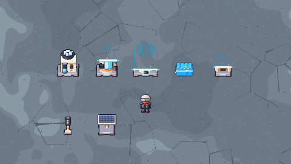
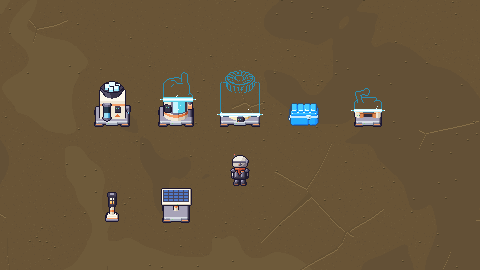
Da esquerda pra direita: derretedor parado, O₂ na metade da construção, aquecedor nv.2 começando, baú no quadro do flash, bancada no meio do desmonte. Recortes 480×270 montados só com os sprites e ordenados pelo pé.
Luz de scanner · quadros-chave
3×, sobre o chão. Os passos são os de 12 por segundo.
Gerador de O₂
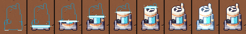
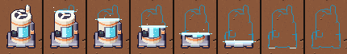
Baú
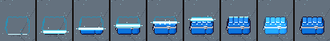
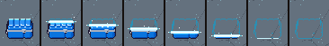
Bancada T2 (pendente)
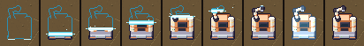
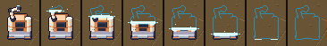
Aquecedor nv.2
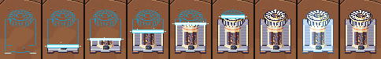
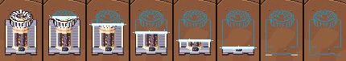
Os números (pro config)
| o quê | valor | como |
|---|---|---|
| Núcleo | #ffffff | 1 px, a linha da faixa, só sobre a silhueta do sprite |
| Borda | #c8f6ff | 1 px em cima e 1 px embaixo do núcleo, só sobre a silhueta |
| Pulso | #59d0e6 | +1 px de cada lado nos passos ímpares: a faixa pulsa 3 px ↔ 5 px, como o feixe da drill |
| Plano | #59d0e6 + ponta #ffffff | na linha do núcleo, 2 px pra fora da silhueta de cada lado (medido na própria linha) e 1 px branco na ponta |
| Holograma | #2b8fb3 | o que ainda não foi construído: só os pixels de contorno #1b1630 do sprite, trocados por essa cor |
| Linhas recém-reveladas | BLEND_RGB_ADD (24, 56, 64) | as 2 linhas logo abaixo da faixa: sprite normal com essa soma (fica "quente" de ciano) |
| Faíscas | #ffffff / #c8f6ff | 2 por passo, 1 px, vivem 1 passo; x sorteado no bbox, y de 2 a 5 px acima do núcleo; só em pixel vazio; cores alternando |
| Passo | 12/s (83 ms) | a faixa anda em passos inteiros de pixel e as faíscas/pulso trocam a cada passo (pixel art, nada de sub-pixel) |
| Construir | 1.5 s = 18 passos | p = passo / 18, sobe; depois 1 passo de flash (o sprite inteiro com a soma) e a máquina passa a funcionar |
| Desmontar | 2.0 s = 24 passos | p = 1 − passo / 24, desce, segue o botão segurado; no fim o holograma pisca (2 passos: apagado, aceso) e some. Soltou antes: volta direto pro sprite normal |
núcleo, borda, pulso, plano, ponta, holograma. Todos na família do laser da drill (LASER_CYAN = branco, #c8f6ff, #59d0e6, #2b8fb3).
Pro Dev integrar
- Nada disso entra sem o ok do dono. Ícones:
icon_constructor.pngeicon_backpack.png, 16×16, contorno#1b1630, alpha 0/255, mesmo uso dos outrosicon_*(hotbar, inventário, fabricador; a mochila também no slot de equipamento, ao lado deicon_o2_tankeicon_scanner). - A luz não tem asset: é desenhada por cima do sprite parado da máquina, com a mesma âncora (pé no centro da borda de baixo do tile). Funciona com qualquer sprite, inclusive os altos (nv.2) e a drill 2×2.
- Uma função pros dois sentidos. Construir e desmontar desenham igual: abaixo da faixa é máquina, acima é holograma. Só muda de onde vem o p.
- Pré-calcule por sprite (uma vez): o bbox da silhueta (y_topo, y_pé), a máscara da silhueta e a superfície do
holograma (contorno
#1b1630→#2b8fb3, resto transparente). - A sombra de chão da máquina (se houver) aparece já no começo da construção e some no fim do desmonte.
- Durante a construção a máquina não funciona (sem anim de operando, sem LED). A animação de operando só começa depois do flash.
- A referência exata está em
tools/sprites/v05_m1_construtor.py(scan_frame,build_seq,unbuild_seq), em numpy. Em pygame fica assim:
SCAN_FPS = 12
SCAN_BUILD_S, SCAN_UNBUILD_S = 1.5, 2.0
SCAN_CORE, SCAN_EDGE, SCAN_PULSE = "#ffffff", "#c8f6ff", "#59d0e6"
SCAN_PLANE, SCAN_NODE, SCAN_GHOST = "#59d0e6", "#ffffff", "#2b8fb3"
SCAN_FRESH_ADD, SCAN_FRESH_ROWS = (24, 56, 64), 2
SCAN_PLANE_OUT, SCAN_SPARKS, SCAN_SPARK_UP = 2, 2, (2, 5)
SCAN_FLASH_STEPS, SCAN_BLINK_STEPS = 1, 2
# step = int(t * SCAN_FPS)
# construir: p = min(step / round(SCAN_BUILD_S * SCAN_FPS), 1)
# desmontar: p = 1 - min(step / round(SCAN_UNBUILD_S * SCAN_FPS), 1)
def draw_scan(dst, spr, ghost, x, y, p, step): # (x, y) = canto do sprite, como o blit normal
y0, y1 = bbox_top, bbox_bottom # pré-calculados
ys = round(y1 + 1 - p * (y1 - y0 + 2)) # linha do núcleo (relativa ao sprite)
h = spr.get_height()
# 1) máquina: linhas abaixo da faixa
if ys + 1 < h:
dst.blit(spr, (x, y + ys + 1), (0, ys + 1, spr.get_width(), h))
fresh = spr.subsurface((0, ys + 1, w, min(SCAN_FRESH_ROWS, h - ys - 1))).copy()
fresh.fill(SCAN_FRESH_ADD, special_flags=pygame.BLEND_RGB_ADD)
dst.blit(fresh, (x, y + ys + 1))
# 2) holograma: linhas acima da faixa
if ys > 0:
dst.blit(ghost, (x, y), (0, 0, w, ys))
# 3) faixa: 3 px (5 px nos passos ímpares), só onde a máscara tem pixel
half = 2 if step % 2 else 1
for k in range(-half, half + 1):
row = ys + k
cor = SCAN_CORE if k == 0 else SCAN_EDGE if abs(k) == 1 else SCAN_PULSE
for (a, b) in runs_da_mascara(row): # trechos [a, b] com pixel na linha
dst.fill(cor, (x + a, y + row, b - a + 1, 1))
# 4) plano: na linha ys, de a-2 até b+2 (a/b = 1º e último pixel da linha), ponta branca em a-3 e b+3
# 5) faíscas: SCAN_SPARKS por passo, x = sorteio(step) no bbox, y = ys - randint(*SCAN_SPARK_UP), só fora da máscara
- As faíscas usam um sorteio só do passo (hash do
step), sem estado; no gerador é um FNV-1a, mas qualquerrandom.Random(step)serve. - Regerar:
python3 tools/sprites/v05_m1_construtor.py(determinístico; refaz este report).